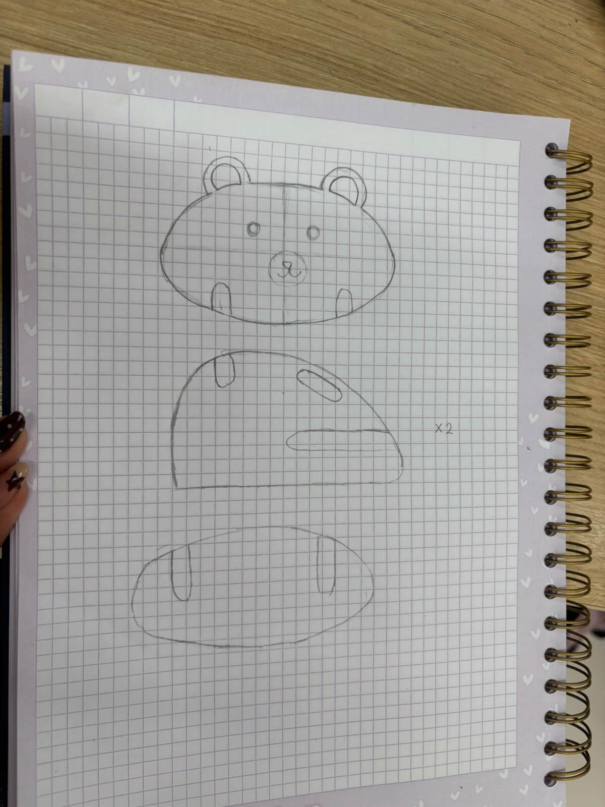
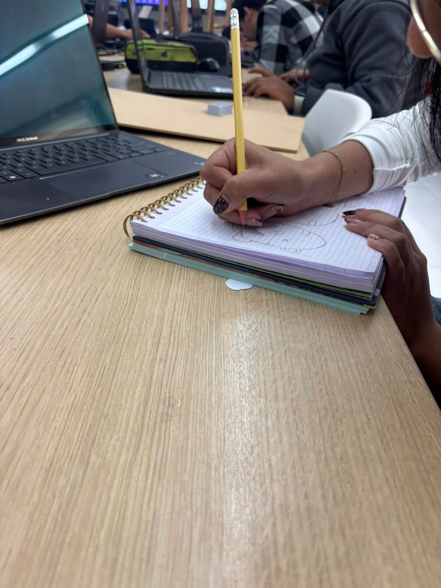
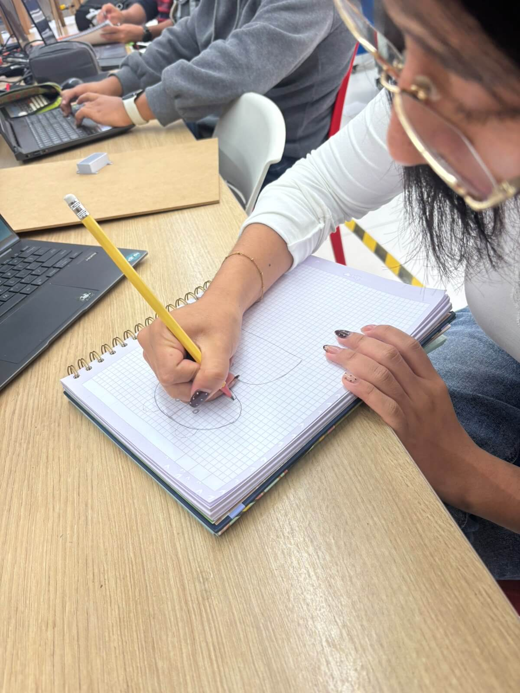
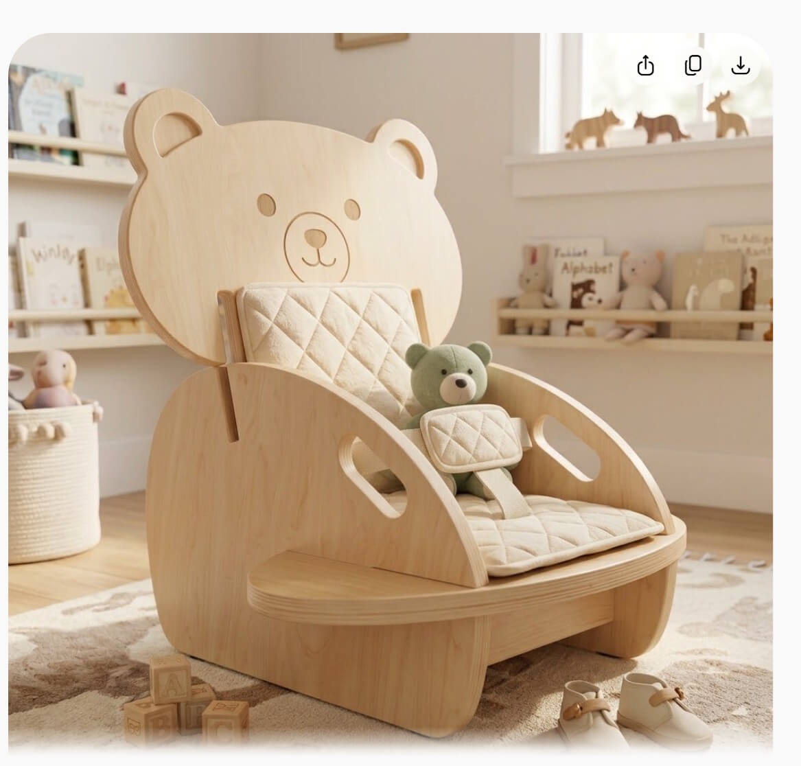
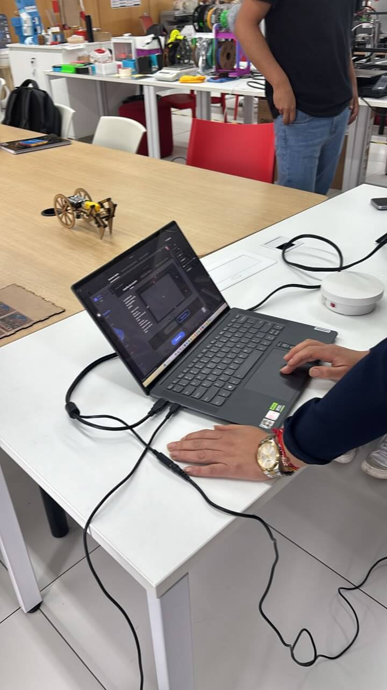
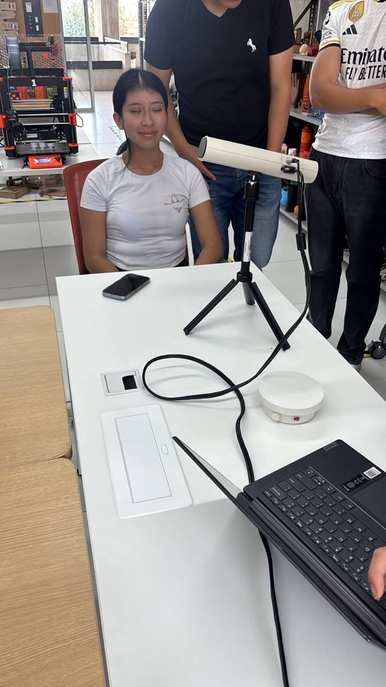
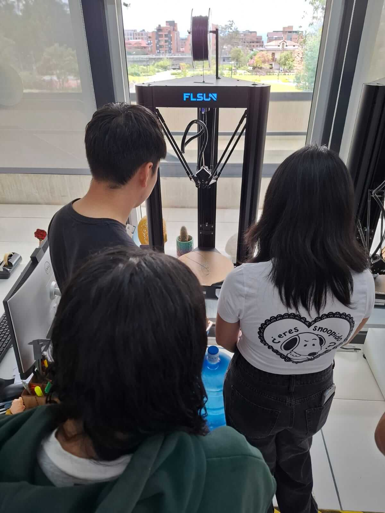
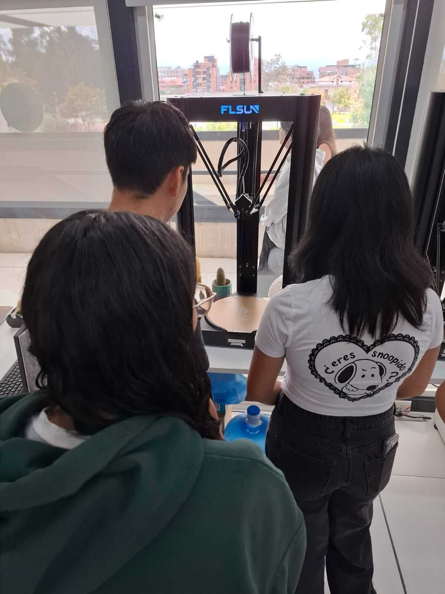
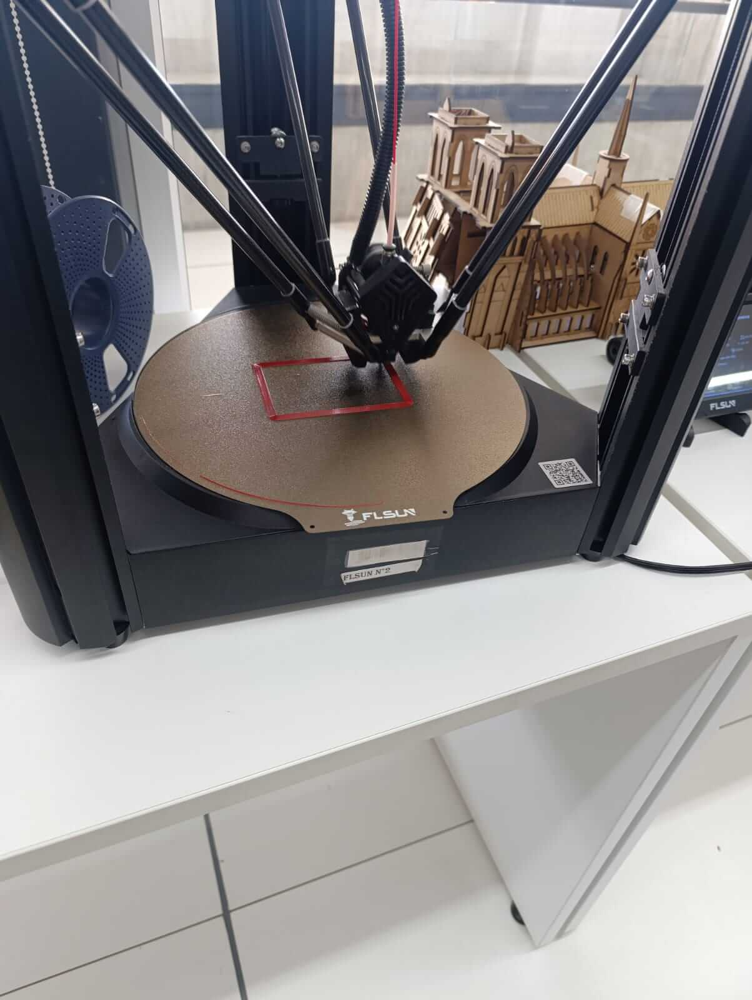

Digital Fabrication Principles: Flat-Pack Furniture, 3D Scanning & Delta 3D Printing
Hands-on technical workshop exploring Ready-to-Assemble (RTA) flat-pack product design inspired by IKEA, optical 3D facial digitizing via CR Studio, and calibration workflows for high-speed Delta additive manufacturing systems.
1. Flat-Pack Furniture Design (IKEA Philosophy)
Anthropometric Child Seating (5 Years Old) & Interlocking Joinery
During this assignment, we analyzed the industrial principles behind IKEA Ready-to-Assemble (RTA) furniture: spatial optimization through flat packaging, durable engineered wood materials, and structural joinery requiring minimal fasteners. Applying these concepts, we conceptualized and dimensioned a wooden children's armchair tailored to the anthropometric measurements of a 5-year-old child (popliteal height: ~28–30 cm; seat depth: ~27 cm).
To create an inviting and functional product, the chair incorporates an organic bear silhouette on the backrest. The structural panels are designed for precision CNC router fabrication from 15 mm birch plywood, utilizing press-fit slot-and-tab joints for intuitive assembly.

1. Hand-Drawn Part Breakdown
Initial sketch decomposing the chair into core cuttable parts: bear-profile backrest, base seat plate, and slotted side panels.

2. Anthropometric Proportions
Team layout drafting defining seat clearance, armrest height, and lumbar incline to support natural posture for early childhood.

3. Contouring & CNC Radii
Rounding external edges and establishing tool-radius compensation (dog-bone corners) on interior joints for CNC milling bits.

4. AI Concept Visualization
Generative visualization demonstrating the final assembled piece in curved plywood with rounded child-safe edges and fitted cushions.
2. Optical 3D Scanning & Mesh Acquisition (CR Studio)
Facial Scanning Protocol & Point Cloud Processing
Unlike manual contact measurement, optical 3D scanning captures freeform organic surfaces with millimetric accuracy. In this module, we deployed an optical structured-light 3D scanner coupled with CR Studio software to capture the human face. The workflow encompasses:
- Exposure & Sensitivity Calibration: Tuning infrared sensor gain to balance lighting reflections on human skin without overexposing highlights.
- Working Distance Optimization: Maintaining the scanner within the recommended depth window (400–700 mm) indicated by CR Studio's visual tracking indicator.
- Trajectory Tracking: Executing a continuous 180° sweep around the subject while maintaining facial stillness to avoid point misalignment and tracking loss.

1. CR Studio Software Pre-Flight
Configuring live framerate, frame registration parameters, and point cloud sampling density on the workstation before scan initialization.

2. Live Facial Digitizing
Positioning the teammate on a fixed rotational axis while operating the optical scanner on a stable tripod to capture nasal, cheek, and jaw contours.
3. Additive Manufacturing: Delta 3D Printer Setup & Calibration (FLSUN)
Delta Kinematics vs. Cartesian Architecture
In standard Cartesian 3D printers, axes move linearly on orthogonal X, Y, and Z rails. In contrast, the FLSUN Delta printer features three parallel articulated arms moving in coordinated trigonometric vectors along vertical pillars to position a lightweight effector. This provides significant advantages: a stationary circular build plate, reduced moving mass, and exceptionally high travel and print accelerations.
During our hands-on session, the team executed the complete calibration cycle required to ensure high-adhesion first layers:

1. Kinematic Structure Inspection
Analyzing the triangular vertical columns, belt tension, and magnetic ball joints connecting the three effector arms.

2. Interface & Homing Setup
Navigating firmware touch menus to home the three axes simultaneously and initiate automated bed compensation routines.

3. First Layer Extrusion
Close-up view of the high-speed printhead depositing perimeter lines on the stationary circular bed, validating Z-offset height.
4. Key Learnings & Practical Takeaways
Flat-Pack RTA Logic
Designing flat-pack wooden products requires strict accounting for sheet thickness tolerances (+/- 0.5 mm) and mechanical dog-bone cutouts so parts assemble without manual filing or glue.
Optical 3D Scanning
Skin surface registration is highly sensitive to ambient lighting and movement. Steady sweeps with controlled infrared exposure in CR Studio prevent mesh distortion and surface holes.
Delta Printing Dynamics
The FLSUN's stationary build plate eliminates inertial shaking along the Y-axis, enabling fast layer deposition as long as bed leveling and Z-offset calibration are carefully maintained.